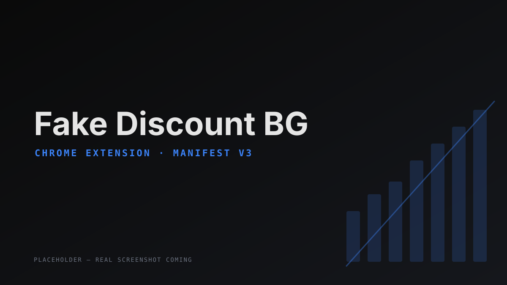

Fake Discount BG
Chrome Extension
"Bulgarian e-commerce inflates prices before Black Friday and fakes the discounts. Now my browser catches the manipulated prices."
The problem
During sale events, Bulgarian retailers (Emag, Ozone, Notino) raise prices days before the "discount" so the slashed price looks bigger than it is. There was no easy way to tell what was real.
What I built
A Chrome/Edge extension (Manifest V3) that auto-tracks every product I visit. After 7+ days of tracking, it gives a verdict directly on the product page: Fake discount / Real deal / Stable price / Still tracking — with reasoning text and an SVG price chart embedded into the page itself. Per-tab badges indicate fake discounts, real deals, and reached price targets.
How I built it
Built using Claude Code. Site-specific content scripts (Emag / Ozone / Notino) sharing a common base class. Background service worker for message routing and analysis. Per-product Chrome local storage with O(1) reads and a write queue to prevent race conditions on rapid reloads. EAN / GTIN extraction enables future cross-site matching.
- 3 marketplaces
- Bilingual BG / EN
- Keyboard shortcut
- Price-target alerts
- Export / import JSON
- Persistent filters
Taught me Manifest V3 service workers, content-script CSP isolation on strict sites (Ozone), and how to design for a multi-day data-collection window.
Live on the Chrome Web Store ↗